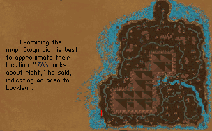

Owyn unfolded the strange note. Though much of the illustration was faded, it appeared they had discovered some sort of map. From what they had seen of the strange island so far it seemed accurate enough. 